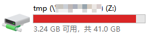

Preface
主机是 Windows 10 , Linux 是 vmware 中的 Centos。
由于最近 VMWare 的剪切板共享经常出现问题，所以在考虑 linux 与 windows 之间的文件共享解决方案，很快就找到了 Samba。
Contents
Linux
iptables
先确保防火墙装了没有，没有的话装一下
1 | yum install iptables-services |
selinux
通过以下命令查看selinux状态，如果是Disable的话继续，如果不是的话禁用一下 selinux
1 | getenforce |
samba
通过以下命令安装samba
1 | sudo yum install samba samba-client samba-swat |
samba.conf
通过以下命令添加共享配置：
1 | sudo vim /etc/samba/smb.conf |
新增的共享配置如下
1 | [tmp] |
添加账号
首先要保证以上valid user是一个 有效的系统账号，不是的话需要添加一下，我直接用的系统账号，所以不需要添加
1 | groupadd test -g 6000 |
添加 Samba 账号
1 | sudo smbpasswd -a hehe |
通过以上命令添加 samba 账号和密码
共享文件夹
建立上面的共享文件夹，并设置好权限
1 | sudo mkdir /home/hehe/share |
重启所有服务
1 | service smb restart |
Windows 10
Win+E 打开资源管理器
点击左上角的计算机
点击【映射网络驱动器】
在文件夹中输入：【\\linux ip\share】
点击完成
输入前面的 samba 账号和密码
完成
预览
此时，可以在 Windows 上看到共享的文件夹了。

Attentions
- Linux上操作基本上都要用 sudo 操作，不然会报其他的问题
- smbpasswd 添加用户需要是一个有效的系统用户